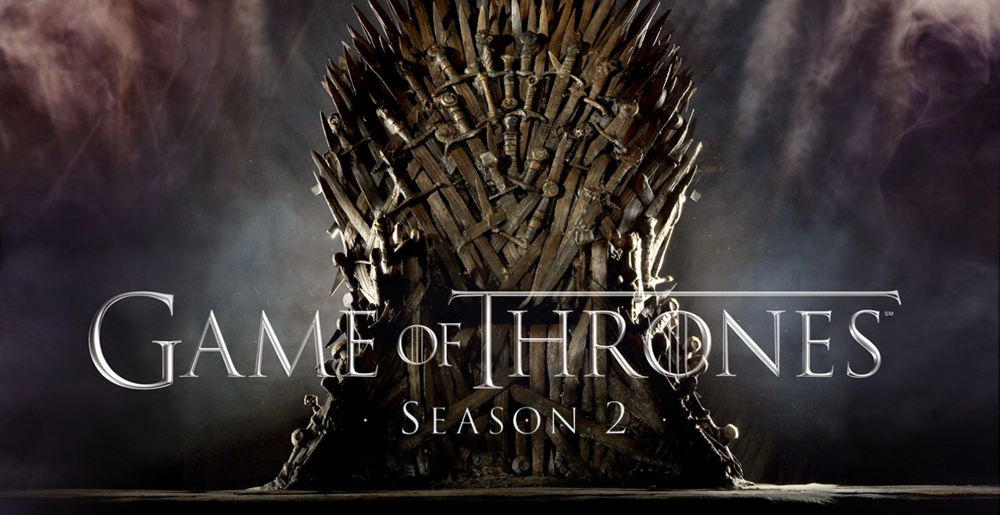

Todo mundo quer botar a bunda no Trono de Ferro, um verdadeiro “Game of Thrones”. Renly Baratheon, o irmão mais novo de Robert. quer ser rei e consegue a aliança da Casa Tyrell. Stannis, o irmão mais velho do finado rei também se prepara para a guerra, mas assim como um hippie, ele não tem dinheiro e segue uma religião bizarra do oriente. Robb Stark se autodenominou o Rei do Norte e decidiu que vai cortar relações com a coroa. Ele pede que seu truta, Theon Greyjoy vá para as Ilhas de Ferro pedir ajuda para seu pai para entrar na guerra. As Ilhas de Ferro são tipo São Vicente, não tem nada para fazer e todo mundo parece miserável. Balon Greyjoy não vai ajudar porque ele também quer ser rei. Todo mundo quer ser rei, parece uma pré-escola de rico.